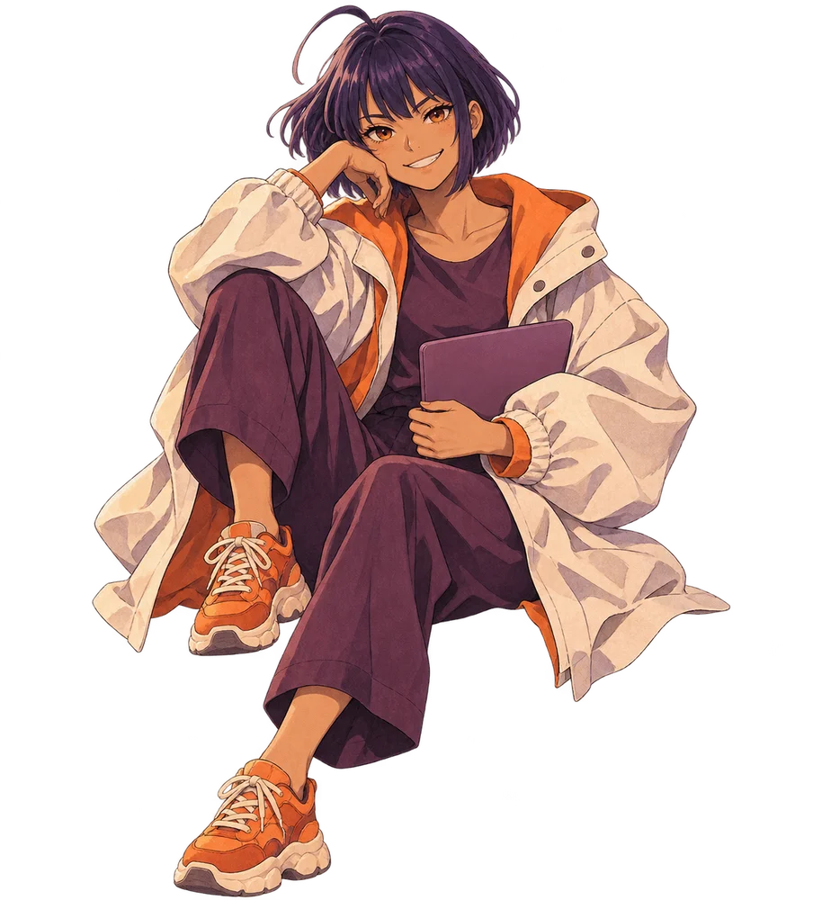

Your weird idea.
Our serious APIs.
Media downloaders, search, AI and tools. For the project that won’t let you sleep.
Make your first requestSLEEP.
After School Internet · interactive concept · generated concept art / temporary segmented rig · no production model
Pick a rabbit hole.
Real endpoints from the registry. Search here, try a local simulation below, or open the API reference.
A request. A reaction.
Try the interaction without spending quota. Everything here is a clearly labeled local fixture. No API credentials or live provider calls.
Ready. No request has been sent.
Character: idle
Local response
No local simulation yet.
Fields in this fixture
status: success boolean; creator: service identity. Error fixtures add error, message and code from the existing error envelope. No endpoint-specific result fields are assumed.
External integration example. Protected endpoints use an environment variable, never your real key.